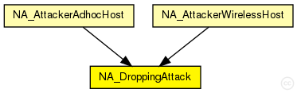
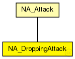

This documentation is released under the Creative Commons license
This documentation is released under the Creative Commons licenseDropping attack controller simple module. One parameter controls the attack behavior: the attack probability.
Author: Gabriel Maciá Fernández, gmacia@ugr.es
Date: 01/22/2013
The following diagram shows usage relationships between types. Unresolved types are missing from the diagram.
The following diagram shows inheritance relationships for this type. Unresolved types are missing from the diagram.
| Name | Type | Description |
|---|---|---|
| NA_Attack | simple module |
Base simple module inherited from all attacks modules. Is in charge of set the schedulling parameters, attack activation or not, and what is the type of the attack. |
| Name | Type | Description |
|---|---|---|
| NA_AttackerAdhocHost | compound module |
Attacker wireless ad hoc host. Modificated from WirelessHost module. Redefined from INET framework and used as attacker host. |
| NA_AttackerWirelessHost | compound module |
Attacker wireless host. Modificated from WirelessHost module. Redefined from INET framework and used as attacker host. |
| Name | Type | Default value | Description |
|---|---|---|---|
| attackType | string | "dropping" |
String with the type of attack |
| active | bool | false |
Indicates if this attack is active or not in the node |
| startTime | double | 0s |
Timestamp to start the attack |
| endTime | double | 0s |
Time instant at which the attack ends, 0 means that the attack will not end during the simulation. |
| droppingAttackProbability | double | 0 |
Probability of dropping a packet. Range [0,1]. |
| Name | Value | Description |
|---|---|---|
| display | i=misc/cloud3,red,100;is=l | |
| class | NA_DroppingAttack |
// // Dropping attack controller simple module. One parameter controls the attack behavior: // the attack probability. // // @see NA_Attack, NA_IPv4 // // @author Gabriel Maciá Fernández, gmacia@ugr.es // @date 01/22/2013 simple NA_DroppingAttack extends NA_Attack { parameters: @class(NA_DroppingAttack); @display("i=misc/cloud3,red,100;is=l"); attackType = "dropping"; //Should correspond with the tag located in the hackedModules.ned. e.g. @dropping for this attack. double droppingAttackProbability = default(0); //Probability of dropping a packet. Range [0,1]. }
This documentation is released under the Creative Commons license